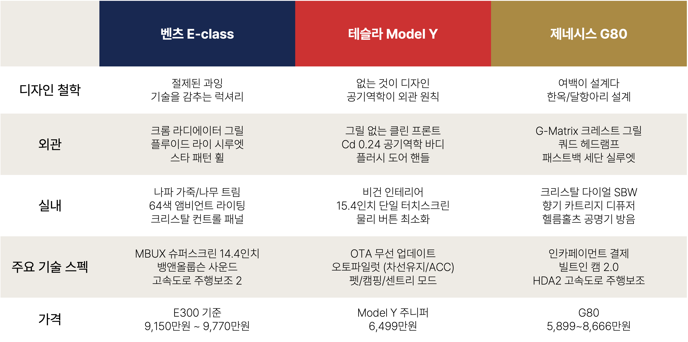
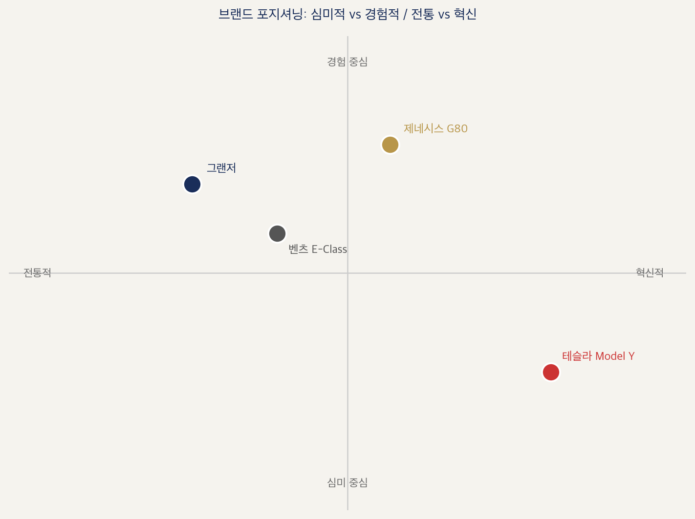
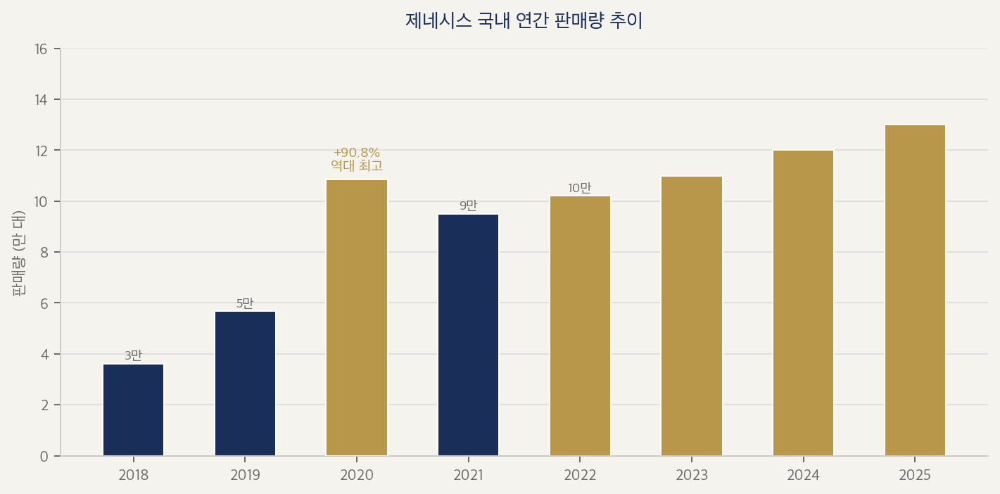
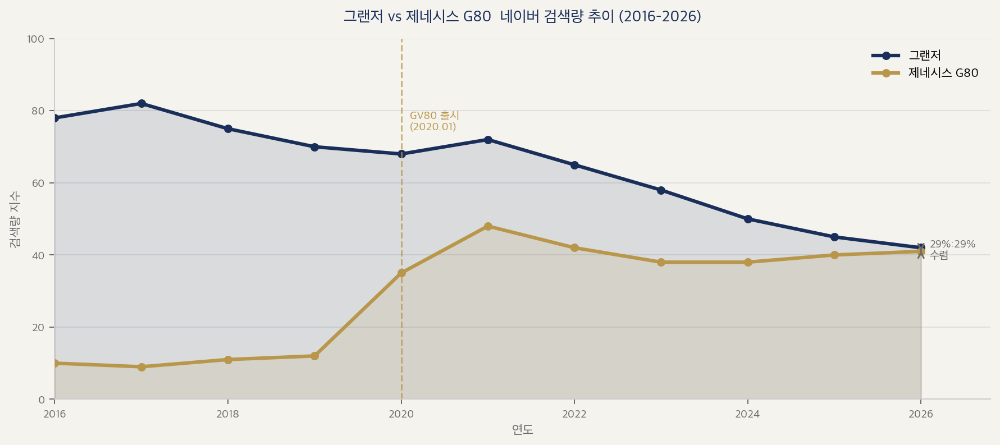

Feeling LuxuryFeeling Luxury
자동차 브랜드가 "좋은 차"를 다시 정의하는 방식How Car Brands Are Redefining the "Good Car"
다연, 지우Dayeon, Jiwoo
Feeling LuxuryFeeling Luxury
자동차 브랜드가 '좋은 차'를 다시 정의하는 방식How Car Brands Are Redefining the "Good Car"

메르세데스-벤츠, 테슬라, 제네시스 세 브랜드의 차량 이미지 비교Vehicle comparison of three brands: Mercedes-Benz, Tesla, and Genesis
왜 Luxury인가Why Luxury?
오늘날 자동차 시장은 크게 세 갈래로 찢겨 있다. 가격 대비 성능과 효율에만 집중하는 가성비(Plain) 시장, 특정 서킷 주행이나 오프로드 등 마니아적 취향을 저격하는 매니악(Maniac) 시장, 그리고 독보적인 가치를 제안하는 럭셔리(Luxury) 시장이다.Today's auto market is split broadly into three strands: the value (Plain) market focused solely on performance and efficiency relative to price; the Maniac market targeting enthusiast tastes such as specific circuit driving or off-roading; and the Luxury market proposing unrivaled value.
이 중 비즈니스 관점에서 가장 치열하고 흥미로운 영역은 바로 '럭셔리 브랜딩'이다. 현대의 소비자들에게 자동차는 더 이상 단순한 이동 수단이 아니기 때문이다. 그냥 잘 굴러가기만 하는 차를 원하는 것을 넘어, 소비자는 더 높은 가격을 기꺼이 지불하더라도(Willingness to Pay) 더 뛰어난 기능과 안락함, 그리고 궁극적으로는 '차를 통해 나를 표현하는 정체성(Self-expression)'을 소유하고 싶어 한다. 돈을 모아 더 좋은 차를 사려는 본질적인 이유도 결국 차 안에서 얻는 고급스러운 경험이 곧 나 자신의 가치를 대변한다고 믿기 때문이다.Of these, the most fiercely contested and fascinating arena from a business perspective is 'luxury branding.' For today's consumers, the car is no longer a simple means of transportation. Beyond wanting a car that simply runs well, consumers want to own superior features and comfort — and ultimately the self-expression of identity through their car — even if they must pay a higher price (Willingness to Pay). The underlying reason for saving up to buy a better car is ultimately the belief that the luxurious experience gained inside the car represents one's own value.
그렇다면 사람들은 왜 기꺼이 높은 프리미엄 가격에 지갑을 열까? 이 아티클에서는 그 이유와 소비자 심리를 건들기 위한 기업들의 전략을 살펴보려 한다.So why do people willingly open their wallets for high premium prices? This article examines those reasons and the strategies companies use to tap into consumer psychology.
제조사 입장에서 브랜드의 영속성과 고부가가치를 확보할 수 있는 유일한 열쇠는 바로 이 소비자의 심리적 WTP를 극대화하는 '럭셔리 브랜딩'의 성공 여부에 달려있다. 그리고 지금, 그 럭셔리를 정의하는 기준이 완전히 뒤흔들리고 있다.For manufacturers, the only key to securing brand longevity and high added value lies in the success of 'luxury branding' — maximizing consumers' psychological WTP. And right now, the standards that define that luxury are being completely upended.
좋은 차의 기준이 바뀌고 있다The Standards for a Good Car Are Changing
과거에는 정말 단순했다. 자동차가 처음 등장했을 때는 엔진이 크고, 빠르고, 배기음이 묵직하면 좋은 차였다. 2000년대를 지나면서 기준이 한 번 바뀌었다. 독일 브랜드만 가능하던 승차감과 안전 기술이 국산 중형 세단에도 표준으로 들어왔다.The past was really simple. When cars first appeared, a big engine, high speed, and a heavy exhaust note made a good car. Crossing into the 2000s, the standard changed once. Ride quality and safety technology that only German brands could offer became standard even in domestic mid-size sedans.
에어백, 충돌 방지 같은 수동적 안전 기술이 옵션이 아니라 당연한 기본 스펙이 되면서, 프리미엄 브랜드들은 ‘새로운 안전의 언어’를 보여줘야 했다. 이제 프리미엄을 가르는 차별점은 고속도로 주행 보조(HDA)나 주행 환경 예측처럼 인간이 운전대 조작에서 해방되어 얼마나 심리적으로 안락하고 안전하게 이동하는가라는 고도화된 경험의 제어 능력에서 판가름 나기 시작했다.As passive safety technologies like airbags and collision prevention became expected baseline specs rather than options, premium brands had to demonstrate a ‘new language of safety.’ The differentiator defining premium began to be decided not by passive hardware but by the sophistication of experience control — how psychologically comfortable and safe humans can travel when freed from steering wheel operation through technologies like Highway Driving Assist (HDA) or driving environment prediction.
사실 이러한 기술들이 보편화되기 전, 메르세데스-벤츠를 필두로 한 전통적 럭셔리 브랜드들이 시장을 지배하기 위해 내세웠던 핵심 무기는 바로 ‘하차감’ 전략이었다. 운전이 피로한 노동으로 느껴지던 시절, 차에서 문을 열고 내릴 때 과시되는 엠블럼, 주변 사람들이 보내는 부러운 시선과 사회적 위상이 프리미엄 가격을 정당화하는 가장 강력한 기준이었다.In fact, before these technologies became widespread, the core weapon that traditional luxury brands led by Mercedes-Benz wielded to dominate the market was the ‘exit prestige’ strategy. In an era when driving felt like tiring labor, the emblem displayed when opening the car door to step out, the envious gazes of bystanders, and social status were the most powerful standards justifying premium pricing.
하지만 지금은 또 달라졌다. 전시장에 들어온 사람들은 생각보다 외관만 쳐다보고 있지 않는다. 그 대신 디스플레이를 손가락으로 훑어보고, 뒷좌석에 앉아 리클라이닝 버튼을 찾는다. '뱅앤올룹슨 스피커에요?' '안마 강도 몇 단계까지 돼요?' 점점 차량 내부에서 얻을 수 있는 가치를 찾는다.But now it has changed again. People who walk into a showroom spend less time looking at the exterior than you might expect. Instead they swipe through the display with a finger, sit in the backseat, and look for the reclining button. 'Is that a Bang & Olufsen speaker?' 'How many levels of massage intensity does it go to?' They increasingly seek value obtainable inside the vehicle.
자율주행 보조가 확산되면서 운전자는 ‘운전’이라는 행위에서 점차 해방되고 있다. 인지 능력이 자유로워진 차 안에서 보내는 시간이 늘어날수록, 그 시간을 어떻게 경험하느냐가 중요해진다. 럭셔리의 무게중심이 도로 위 성능과 하차감에서 차 안 경험(승차감과 공간감)으로 이동하는 건 자연스러운 흐름이다.As autonomous driving assistance spreads, drivers are gradually being freed from the act of ‘driving.’ The more time spent inside a car where cognitive capacity is freed up, the more important how that time is experienced becomes. It is a natural flow for the center of gravity of luxury to shift from on-road performance and exit prestige to the in-car experience (ride comfort and sense of space).
그러나 많은 완성차 제조사들이 기술 경쟁에 사활을 거는 지금, 소비자가 정의하는 럭셔리의 진짜 본질은 예상치 못한 곳에 있었다. McKinsey가 글로벌 럭셔리카 구매자 147명을 심층 조사한 결과, 화려한 첨단 기술 스펙은 있으면 좋은 기본 조건(Must-have)으로 상향 평준화되고 있을 뿐, 실제 구매자들의 가장 중요한 구매 기준은 결국 ‘디자인’이었다.But now, when many automakers are staking their survival on the technology race, the real essence of luxury as defined by consumers was in an unexpected place. A McKinsey deep-dive survey of 147 global luxury car buyers found that flashy high-tech specs are merely leveling up as expected baseline conditions (must-haves) — and the most important actual purchase criterion for buyers was ultimately ‘design.’
특히 흥미로운 점은 소비자의 성향을 분류한 4개 페르소나 전반에서 디자인이 1~2위를 다투는 가장 강력한 구매 동인으로 나타났다는 사실이다. 심지어 최첨단 기술을 가장 갈망할 것 같은 '혁신 추구자(Innovation seeker)' 집단마저도, 차량 내 연결성(Connectivity) 사양보다 디자인을 더 중요하게 꼽았다.What is particularly interesting is that across all 4 consumer personas, design emerged as the most powerful purchase driver, consistently ranked 1st or 2nd. Even the 'Innovation Seeker' segment — which would seem most eager for cutting-edge technology — rated design as more important than in-vehicle connectivity features.
이 데이터가 시사하는 바는 명확하다. 바야흐로 도래한 '기술 평준화'의 시대에 단순한 기술 스펙이나 스크린의 크기는 더 이상 프리미엄 가격을 정당화하는 독보적인 차별화 요소가 되지 못한다. 결국 뉴 럭셔리의 핵심은 기술의 개수가 아니다. 첨단 기술이 눈에 띄게 대놓고 드러나는 것이 아니라, 차 안의 향기나 조명, 가죽의 촉감처럼 '소비자가 몸으로 느끼는 감성적인 순간'의 완성도가 뒷받침될 때 소비자는 WTP를 굳힌다. 즉, '기술에 감성을 입히는 정교한 디테일'이야말로 브랜드의 진짜 실력인 셈이다.What this data implies is clear. In an era of 'technology commoditization,' simple technology specs or screen size no longer serve as singular differentiating factors justifying premium prices. Ultimately the core of new luxury is not the number of technologies. Consumers cement their WTP not when advanced technology is conspicuously on display, but when the completeness of 'emotionally felt moments' — like the scent inside the car, the lighting, the feel of leather — is supported. In short, 'refined details that layer emotion onto technology' is the brand's true capability.
럭셔리한 경험이 럭셔리 인식을 만든다Luxurious Experience Creates Luxury Perception
‘경험이 곧 럭셔리’라는 말은 단순히 비싼 차를 타고 이동하는 행위 자체가 사치스럽다는 뜻이 아니다. 문이 닫히는 묵직한 소리, 시트의 가죽 촉감 같은 정밀하게 설계된 감각(경험)이 모여 비로소 소비자의 뇌리에 고급스럽다는 인상을 각인시킨다는 의미다. 이 아티클이 주목하는 본질도 바로 여기에 있다.The phrase ‘experience is luxury’ does not simply mean that the act of traveling in an expensive car is itself extravagant. It means that precisely designed sensations — the solid sound of a door closing, the leather feel of the seat — accumulate to imprint the impression of luxury in the consumer's mind. The essence this article focuses on is precisely here.
럭셔리 인식은 두 단계로 쌓인다. 먼저 심미적 충격 — 눈에 보이고 손에 잡히는 것들이 만드는 첫인상이다. 소재의 질감, 빛이 흐르는 방식, 형태가 만드는 공간감. 이것들이 '이 차는 다르다'는 직관을 만든다. 그 다음은 경험적 확신 — 그 차 안에서 시간을 보내며 쌓이는 감각이다. 공간의 조용함, 시트가 몸을 감싸는 방식, 향기. 직관을 확신으로 바꾸는 것들이다.Luxury perception accumulates in two stages. First: aesthetic impact — the first impression made by what you can see and touch. The texture of materials, the way light flows, the sense of space created by form. These build the intuition that 'this car is different.' Second: experiential conviction — sensations accumulated while spending time inside that car. The quietness of the space, the way the seat wraps around the body, the fragrance. These are what convert intuition into conviction.
심미적 요소가 럭셔리의 문을 열고, 경험적 요소가 그 문 안에 사람을 머물게 한다. 브랜드마다 이 두 층위를 설계하는 방식이 다르다. 그리고 그 방식의 차이가 곧 브랜딩이다.Aesthetic elements open the door to luxury; experiential elements keep people inside that door. Each brand designs these two layers differently. And the difference in approach is branding itself.
Nielsen의 조사에서 럭셔리카 구매자의 56%가 '차의 섹스 어필이 중요하다'고 답했다. 그들은 일반 구매자보다 3배 더 '이 차가 나를 반영한다'고 믿었다. (Nielsen, 'Making Buyers' Hearts Race', 2019) 즉 사람들은 이제 스펙표만을 읽는 게 아니라 감각으로 반응하고, 그 감각을 설계하는 것이 럭셔리 브랜딩의 본질이다.In Nielsen's survey, 56% of luxury car buyers said 'sex appeal of the car matters.' They were 3 times more likely than general buyers to believe 'this car reflects me.' (Nielsen, 'Making Buyers' Hearts Race,' 2019) In other words, people now respond with their senses rather than just reading spec sheets, and designing those sensations is the essence of luxury branding.
이러한 변화를 우리는 세 브랜드의 차에서 읽어보려고 한다. 메르세데스-벤츠, 테슬라, 제네시스. 같은 도로 위에서 경쟁하는 세 가지 모두 '좋은 차'로 불리지만, 브랜드마다 럭셔리를 구현하는 방식은 조금씩 다르다. 그리고 그 차이가 꽤 흥미롭다.We want to read this change through three brands' cars. Mercedes-Benz, Tesla, Genesis — all three competing on the same road are called 'good cars,' but each brand implements luxury differently. And those differences are quite interesting.
세 브랜드, 세 가지 럭셔리 설계 방식Three Brands, Three Approaches to Luxury Design

세 브랜드 럭셔리 설계 비교 — 심미적 언어 / 소재·형태 / 경험 설계 / 페르소나 / 가격Three-Brand Luxury Design Comparison — Aesthetic Language / Materials·Form / Experience Design / Persona / Price
메르세데스-벤츠 — 기술을 감춘 프라이빗 라운지Mercedes-Benz — A Private Lounge That Conceals Technology
메르세데스-벤츠는 자신이 100년 전통의 '올드 럭셔리'라는 사실을 굳이 숨기지 않는다. 하지만 이들이 기술 평준화 시대에 왕좌를 지키는 방식은 결코 고리타분하지 않다. 벤츠는 자동차를 단순한 이동 수단이 아니라 '움직이는 프라이빗 라운지'로 바라본다.Mercedes-Benz doesn't bother hiding the fact that it is '100-year-old luxury.' But the way it maintains its throne in an age of technology commoditization is anything but stale. Benz views the car not as a simple means of transportation but as a 'moving private lounge.'
벤츠의 UX 철학은 역설적으로 '운전자가 자동차라는 기계를 신경 쓰지 않게 만드는 것(인지 부하 감소)'에 가깝다. 극단적으로 부드러운 승차감과 소음 차단은 기본 전제다. 이들의 진짜 실력은 감성 설계에서 드러난다. 64색 앰비언트 라이트, 정밀한 향기 시스템, 마사지 시트, 그리고 자동 온도 조절 기능을 하나의 소프트웨어로 유기적으로 엮어낸다. 첨단 기술을 대놓고 자랑하는 것이 아니라, 탑승자의 기분 상태 자체를 따뜻하게 관리하는 데 기술을 서포터로 부리는 것이다.Benz's UX philosophy is paradoxically close to 'making the driver not have to think about the machine (reducing cognitive load).' An extremely smooth ride and noise insulation are baseline prerequisites. Their true capability shows in emotional design. 64-color ambient lighting, a precision fragrance system, massage seats, and automatic temperature control are organically woven together in a single software layer. Rather than openly boasting about advanced technology, they put technology in a supporting role — gently managing the occupant's emotional state.
특히 벤츠가 제안하는 뒷좌석 경험은 이동 시간을 '목적지에 가기 위해 버리는 시간'이 아니라 '온전히 쉬고, 생각하고, 업무를 보는 가치 있는 시간'으로 재정의한다. 벤츠는 화려한 디지털 스펙 너머에 있는 가장 아날로그적이고 정서적인 안락함을 최첨단 기술로 구현해 내며 럭셔리의 기준을 지키고 있다.In particular, the rear-seat experience Benz offers redefines travel time — not as 'time thrown away to reach a destination' but as 'valuable time to fully rest, think, and work.' Benz maintains the standard of luxury by realizing the most analog and emotional comfort — the kind that lies beyond flashy digital specs — through cutting-edge technology.


테슬라 — 소프트웨어가 경험을 정의한다Tesla — Software Defines the Experience
테슬라는 럭셔리해 보이려 애쓰지 않는다. 그릴도 없고, 물리 버튼도 없다. 그런데 사람들은 이 차를 프리미엄으로 인식한다. J.D. Power의 2023년 미국 프리미엄 브랜드 만족도 조사에서 테슬라는 기술·연결성 항목 상위권을 차지했다. 기술 경험이 럭셔리 인식을 만든 사례다.Tesla does not try to look luxurious. No grille, no physical buttons. Yet people perceive this car as premium. In J.D. Power's 2023 U.S. Premium Brand Satisfaction Study, Tesla ranked at the top in technology and connectivity. A case of technology experience creating luxury perception.
테슬라의 시각 언어는 없는 것이 디자인이다. 항력계수(Cd) 0.24 — 공기역학이 외관 원칙이다. 그릴이 없다. 배기구도 없다. 내연기관의 모든 문법을 지웠다. 인테리어도 마찬가지다. 2019년부터 전 차종에 비건 인테리어를 적용했다. (Electrek, 2019.08) 가죽을 쓰지 않겠다는 선언이 아니라, 소재 선택지 자체를 없애는 미니멀리즘이다. 남기지 않는 것으로 정체성을 만든다.Tesla's visual language: what is absent is the design. Drag coefficient (Cd) 0.24 — aerodynamics is the exterior principle. No grille. No exhaust. Every grammar of the internal combustion engine erased. The interior is the same. Starting in 2019, vegan interiors have been applied across all models. (Electrek, 2019.08) Not a declaration to stop using leather, but a minimalism that eliminates the material choice itself. Identity is built by what is not left.
럭셔리는 하드웨어가 아니라 소프트웨어에서 온다. OTA(Over-The-Air) 무선 업데이트로 밤사이에 새 기능이 추가된다. 펫 모드, 캠핑 모드, 자동 차선 변경 — 차를 샀는데 계속 새로운 차가 되는 경험이다. '어제와 다른 차'라는 감각. 이게 테슬라 차주가 말하는 럭셔리다.Luxury comes not from hardware but from software. OTA (Over-The-Air) wireless updates add new features overnight. Pet Mode, Camp Mode, auto lane change — you bought a car that keeps becoming a new car. The sensation of 'a car different from yesterday.' That is the luxury Tesla owners talk about.
다만 이 철학이 규제와 충돌했다. Euro NCAP은 2026년부터 경적·와이퍼·방향지시등에 물리 버튼이 없으면 5성 등급을 주지 않기로 했다. 터치스크린 조작이 시선을 도로에서 5~40초 뺏는다는 안전 연구가 근거다. (paultan.org, 2024.03) 없앰으로써 만든 정체성의 한계선이다.However, this philosophy has clashed with regulation. Euro NCAP decided that from 2026, vehicles without physical buttons for the horn, wipers, and turn signals will not receive a 5-star rating. The basis is safety research showing touchscreen operation takes drivers' eyes off the road for 5 to 40 seconds. (paultan.org, 2024.03) The limit of an identity built through elimination.
테슬라를 타는 사람은 얼리어답터라는 정체성을 산다. 환경 의식, 기술 감수성, 미래 지향 — 이 차의 외관이 말하는 것들이다. 소프트웨어 업데이트 알림이 왔을 때의 설렘. 이것이 테슬라가 설계한 럭셔리 경험이다.A person who drives a Tesla buys the identity of an early adopter. Environmental consciousness, technological sensibility, future orientation — what this car's exterior communicates. The excitement when a software update notification arrives. This is the luxury experience Tesla has designed.

제네시스 G80 — 헤리티지 없이 럭셔리를 만드는 법Genesis G80 — How to Build Luxury Without Heritage
오랜 시간 국내 자동차 시장에서 현대자동차의 '그랜저'는 단순한 이동 수단이 아니었다. 그것은 부와 대중적 성공을 대변하는 가장 확실한 사회적 언어이자 플래그십 세단이었다. 실제로 그랜저는 공간을 넓어 보이게 만드는 수평선 대시보드(Seamless Horizon)와 최첨단 인포테인먼트 시스템인 '플레오스 커넥트'를 과감히 탑재하며 대중적 프리미엄의 왕좌를 굳건히 지켜왔다. 화려한 기능의 풍요로움으로 대중을 만족시키는 것, 그것이 현대자동차가 가장 잘하는 브랜딩의 방식이었다.For a long time in the domestic auto market, Hyundai's 'Grandeur' was not a simple means of transportation. It was the most certain social language representing wealth and popular success — the flagship sedan. Indeed, the Grandeur has firmly held the throne of popular premium by boldly incorporating the Seamless Horizon dashboard that makes the space look wider and the cutting-edge 'Pléos Connect' infotainment system. Satisfying the masses with the abundance of flashy features — that was the branding method Hyundai did best.
하지만 글로벌 하이엔드 시장, 특히 세계 최대의 격전지인 북미 마켓으로 무대를 옮기면 이야기는 달라졌다. 냉혹한 글로벌 시장에서 '가성비의 현대'라는 두터운 틀과 그랜저라는 대중차 세단 라인업만으로는 100년의 역사를 가진 전통의 맹주들과 정면으로 경쟁하기에 명확한 한계가 존재했다. 현대자동차에게는 대중성을 넘어선 완전히 새로운 차원의 프리미엄 플랫폼이 절실했다.But moving the stage to the global high-end market — particularly the North American market, the world's largest battleground — the story changed. In the unforgiving global market, 'value-for-money Hyundai' as a thick frame and the Grandeur mass-market sedan lineup alone had clear limits when competing head-on with traditional powerhouses with 100-year histories. Hyundai desperately needed a completely new-dimension premium platform beyond mass-market appeal.
이에 현대자동차는 과감히 'H' 로고와의 단절을 선언하고, 2015년 '제네시스'라는 독립 브랜드를 세상에 선보였다. 오래된 역사(헤리티지)가 없다는 치명적인 공백을 메우기 위해 제네시스가 선택한 무기는 화려한 스펙 경쟁이 아니었다. 제네시스의 크리에이티브를 이끄는 루크 동커볼케 수석 부사장은 당시의 중압감을 이렇게 회상한다.So Hyundai boldly declared a break from the 'H' logo and introduced the independent brand 'Genesis' to the world in 2015. To fill the fatal gap of having no long history (heritage), the weapon Genesis chose was not a flashy spec competition. Luc Donckerwolke, Executive Vice President leading Genesis's creative, recalls the pressure of that time:
"제네시스에는 물려받은 유전적 유산이 없었습니다. 그렇기에 모든 디자인 단계가 브랜드의 혈통을 만들어내야 한다는 거대한 책임감이 따랐죠." — Luc Donckerwolke, 제네시스 수석 부사장 (Car Design News / Wallpaper*, 2020)"Genesis had no inherited genetic legacy. For that reason, every stage of design carried the enormous responsibility of having to create the brand's bloodline." — Luc Donckerwolke, EVP, Genesis (Car Design News / Wallpaper*, 2020)
역사적 뿌리가 없던 신생 브랜드가 택한 전략은 결국 인간의 본연적 감성을 파고드는 '촘촘하게 설계된 오감(4감각)의 안락함'이었다.The strategy chosen by the new brand with no historical roots was ultimately 'the comfort of precisely designed five senses (four senses)' — penetrating the human being's innate emotions.
제네시스 경험의 정점에 서 있는 G80의 시각 언어는 역설적이게도 '여백이 설계다'라는 철학에서 출발한다. G80의 인테리어를 처음 마주하면 당황스럽다. 화려하게 채워져 있기보다 비어 있는 느낌이다. 이에 대해 제네시스 인테리어 디자인 수장 오재호는 아래와 같이 설명한다.The visual language of the G80 — at the pinnacle of the Genesis experience — paradoxically starts from the philosophy that 'negative space is design.' When you first encounter the G80's interior, you are taken aback. It feels empty rather than elaborately filled. Genesis interior design head Oh Jae-ho explains it this way:
"여백을 만드는 것이 아니라, 구성요소를 최적으로 배치한 결과 자연스럽게 생겨나는 공간이다. 영감은 한옥의 곡선과 백자 달항아리의 절제된 형태에서 왔다." — 오재호, 제네시스 인테리어 디자인 수장 (제네시스 공식 디자인 노트, 2023)"It is not that we create negative space — it is the space that naturally emerges as a result of optimally arranging the constituent elements. The inspiration came from the curves of the hanok and the restrained form of the white porcelain moon jar." — Oh Jae-ho, Genesis Interior Design Head (Genesis Official Design Note, 2023)
마치 호텔 스위트룸이나 고급 레스토랑 테이블이 덜 채워져 있을 때 비로소 심리적 풍요로움이 생기는 것처럼, G80의 실내는 '억지로 채우지 않아도 충분하다는 시각적 자신감'을 자동차 안으로 가져온 것이다. 이 여백을 배경 삼아 제네시스는 시각·청각·촉각·후각이라는 네 가지 감각을 매우 정밀하게 쌓아 올린다.Just as a hotel suite or a fine restaurant table generates psychological abundance precisely when it is less filled, the G80's interior has brought 'the visual confidence of being sufficient without forced filling' inside a car. Against this backdrop of negative space, Genesis builds the four senses — sight, sound, touch, and scent — with extraordinary precision.
시각은 날개 달린 'G' 크레스트 로고의 두 선과 G-Matrix 패턴이 외관 그릴에서 시작해 실내 도어 트림까지 유기적으로 이어지며 시각적 안정감을 준다.For sight: the two lines of the winged 'G' crest logo and the G-Matrix pattern organically flow from the exterior grille all the way to the interior door trim, providing visual stability.
청각은 도어를 3중 웨더스트립으로 밀봉하고 전·후면에 방음 이중접합 유리를 적용하는 것을 넘어, 노면 소음을 흡수하는 헬름홀츠 공명기를 통해 차 안을 완벽한 '정적의 공간'으로 격리한다.For sound: beyond sealing doors with triple weatherstrips and applying acoustic laminated glass front and rear, Helmholtz resonators absorb road noise to isolate the interior as a perfect 'space of silence.'
촉각은 정교한 아날로그적 손맛을 남겨두었다. 테슬라가 모든 조작을 화면으로 집중할 때, 제네시스는 볼륨과 온도 조절 등 손이 기억하는 위치에 물리 버튼을 의도적으로 유지했다. 특히 보석처럼 깎아낸 크리스탈 다이얼 전자식 변속기(SBW)는 후진 전환 시 미세한 햅틱 진동을 손끝에 전달하며 럭셔리한 조작 의식을 만들어낸다.For touch: refined analog hand-feel has been intentionally preserved. Where Tesla concentrates all controls on a screen, Genesis deliberately maintains physical buttons at positions the hand remembers — volume and temperature among them. The crystal dial electronic shift-by-wire (SBW) in particular, faceted like a jewel, transmits subtle haptic vibration to the fingertips when shifting into reverse, creating a luxurious operating ritual.
후각은 글로브박스에 내장된 향기 카트리지 디퓨저가 공조 시스템/조명과 연동되어 정서적 안락함의 정점을 찍는다.For scent: a fragrance cartridge diffuser integrated into the glove box links with the climate system and lighting to reach the peak of emotional comfort.
이 네 가지 감각이 차 안이라는 밀폐된 공간에서 동시에 작동할 때, 탑승자의 뇌는 단편적인 기술 스펙이 아닌 '완벽하게 대접받고 있다'는 종합적인 공간감을 인지하게 된다. 시각적인 첫인상이 제네시스라는 브랜드의 문을 열고, 여러 감각이 다채롭게 포개어지는 순간 탑승자는 그 공간에 비로소 완전히 머물게 된다. 이상엽 제네시스 디자인센터장이 "G80의 실내공간은 기술 과시에 의존하는 기존의 고급스러움에 의문을 던지는, 새로운 고급스러움에 대한 제네시스만의 해석"이라고 단언한 이유가 바로 여기에 있다.When these four senses work simultaneously in the enclosed space of a car's interior, the occupant's brain perceives not fragmented technology specs but a comprehensive sense of space — 'being perfectly taken care of.' A visual first impression opens the door to the Genesis brand, and in the moment the senses richly layer upon one another, the occupant finally and fully inhabits that space. This is precisely why Lee Sang-yeop, Genesis Design Center Head, firmly declared: 'The G80's interior space is Genesis's own interpretation of new luxury — one that questions the existing luxury that relies on technological display.'
이러한 감각 중심의 경험 설계는 차 밖에서도 고스란히 이어진다. 현대차가 대량 판매 중심의 대중적인 딜러십 모델을 유지하는 반면, 제네시스는 차를 사러 가는 곳이 아니라 브랜드의 세계관을 체험하는 부티크 스타일의 독립 전시장(뉴욕 제네시스 하우스 등)을 운영한다. 전담 컨시어지가 시승 예약부터 자택 배송까지 케어하는 프라이빗 서비스를 통해 소비자는 차를 구매하는 것이 아니라 '제네시스의 멤버'로 인정받는 경험을 얻는다.This sensory-centered experience design continues seamlessly outside the car as well. While Hyundai maintains a volume-sales-oriented mass dealership model, Genesis operates boutique-style independent showrooms (such as Genesis House New York) — places not to buy a car but to experience the brand's worldview. Through a private service in which a dedicated concierge handles everything from test drive scheduling to home delivery, consumers gain the experience of being recognized not as car buyers but as 'Genesis members.'
이렇게 벤츠의 프라이빗 라운지나 테슬라의 첨단 디지털 디바이스와는 또 다른, 제네시스만의 독자적 하이엔드 영토는 바로 인간 감각 중심의 디테일 설계 위에서 태어났다.In this way, distinct from Benz's private lounge and Tesla's advanced digital device, Genesis's own high-end territory was born on the foundation of detail design centered on human senses.
그렇다면 각기 다른 철학으로 무장한 브랜드들의 경험 설계에 시장은 어떻게 반응했을까? 특히, 현대자동차가 오랫동안 구축해 온 성공의 기준점이자 제네시스 탄생의 배경이 된 '그랜저'와 그 한계를 넘으려 한 '제네시스 G80'의 실제 성적표를 들여다봤다. 이제 소비자의 마음속 경쟁 지도가 어떻게 바뀌었는지 숫자를 통해 확인해 볼 차례다.So how did the market respond to the experience designs of brands armed with different philosophies? We looked in particular at the actual scorecards of the 'Grandeur' — Hyundai's long-established success benchmark and the backdrop of Genesis's birth — and the 'Genesis G80' that sought to transcend its limits. Now it's time to verify through numbers how the competitive map in consumers' minds has changed.

브랜드 포지셔닝 맵: 심미적 vs 경험적 / 전통 vs 혁신Brand Positioning Map: Aesthetic vs. Experiential / Traditional vs. Innovative
시장은 어떻게 반응했나How Did the Market Respond?
판매량: 경험 설계가 시장을 바꿨다Sales Volume: Experience Design Changed the Market
시장의 대답은 명확했다. 제네시스의 등장이 그랜저의 파이를 뺏어오지 않을까 했던 우려는 완전히 빗나갔다. 그랜저는 여전히 연간 10만 대 이상 팔린다. 대중적 프리미엄의 왕좌다. 그 위에서 제네시스가 독자 영토를 구축에 성공했다. 2020년 GV80·G80을 연이어 내놓으면서 국내 판매량이 전년 대비 90.8% 성장해 108,384대 — 브랜드 사상 첫 연간 10만 대를 돌파했다. (The Korea Herald, 2021)The market's answer was clear. The fear that Genesis's arrival would steal Grandeur's pie was completely off the mark. Grandeur still sells over 100,000 units per year — the throne of popular premium. On top of that, Genesis has succeeded in establishing its own territory. By successively launching the GV80 and G80 in 2020, domestic sales grew 90.8% year-over-year to 108,384 units — the brand's first annual 100,000-unit milestone. (The Korea Herald, 2021)
세계 최대의 하이엔드 격전지인 미국에서도 헤리티지 없는 한국 브랜드가 빛을 발하고 있다. 제네시스의 미국 판매량은 2022년 56,410대에서 2025년 77,666대(+9.67% YoY)로 매년 최고치를 경신하며 가파르게 우상향 중이다. (KAIDA / Genesis Motors USA 공식 발표)Even in the United States — the world's largest high-end battleground — the Korean brand without heritage is shining. Genesis's U.S. sales have been setting new records every year, rising sharply from 56,410 units in 2022 to 77,666 units in 2025 (+9.67% YoY). (KAIDA / Genesis Motors USA official announcement)
2026년 기준 글로벌 누적 판매 150만 대를 돌파한 제네시스의 행보는, 제조 품질 중심의 전통적 자동차 시장 판도가 브랜드가 제공하는 '차량 내 경험의 밀도' 중심으로 완전히 재편되었음을 실증적으로 보여주는 가장 완벽한 사례다.Genesis's achievement of surpassing 1.5 million cumulative global sales as of 2026 is the most perfect case empirically demonstrating that the traditional automotive market landscape, centered on manufacturing quality, has been completely reorganized around 'the density of in-vehicle experience' that brands provide.

제네시스 국내 연간 판매량 추이 (2018~2025) | 출처: The Korea Herald / 현대자동차 판매 실적Genesis Domestic Annual Sales Trend (2018–2025) | Source: The Korea Herald / Hyundai Motor Sales Results
검색량: 소비자 마음속 경쟁 지도Search Volume: The Competitive Map in Consumers' Minds
흥미로운 점은 이것이 단순히 반짝이고 사라지는 신차 효과가 아니었다는 사실이다. 검색량은 판매보다 한 단계 앞을 보여준다. 관심을 가졌다, 비교했다, 고민했다 — 소비자의 마음속 우선순위를 그리는 지도다.What is interesting is that this was not simply a flash-and-disappear new-car effect. Search volume shows one step ahead of sales. They were interested, they compared, they deliberated — it is a map drawing the priorities in consumers' minds.
대형 SUV인 GV80이 출시되었을 때, 신비롭게도 기존 세단 모델인 G80의 검색량도 함께 폭발했다. GV80 출시 전 6개월간 평균 4.6에 머물던 G80의 검색량이, 출시 후 6개월 동안 13.2로 무려 189% 급등한 것이다. (네이버 데이터랩, NAPD 3팀 자체 분석) 신차 하나가 아니라 제네시스라는 브랜드 전체가 올라간 것이다. 신차 하나가 잘 팔린 것을 넘어, 제네시스가 설계한 '감각의 경험'에 매료된 소비자들이 브랜드 전체를 지지하기 시작했음을 숫자가 증명해준다.When the large SUV GV80 launched, mysteriously the search volume for the existing sedan model G80 also exploded together. G80 search volume, which had averaged 4.6 in the six months before the GV80 launch, surged a remarkable 189% to 13.2 in the six months after launch. (Naver DataLab, NAPD Team 3 in-house analysis) It was not a single new car that rose — it was the entire Genesis brand. Beyond a single new car selling well, the numbers prove that consumers enchanted by the 'sensory experience' Genesis designed began to support the entire brand.
그리고 시간이 흘러 제네시스가 시장에 완벽히 안착한 지금, 검색량 지표는 또 한 번 재밌는 현상을 보여준다. 최근 1년간 그랜저와 G80의 네이버 검색량 비중이 ‘29% 대 29%’로 수렴했다. (네이버 데이터랩 2025.05~2026.05, NAPD 3팀 자체 분석)And now that time has passed and Genesis has perfectly settled in the market, the search volume index shows another interesting phenomenon. Over the past year, the Naver search volume share of Grandeur and G80 converged to ‘29% vs. 29%.’ (Naver DataLab 2025.05–2026.05, NAPD Team 3 internal analysis)
한때 국민차와 신생 럭셔리의 격차가 뚜렷했던 두 차종이 이제는 소비자의 선택지 위에 나란히 놓였다는 뜻이다. 커뮤니티마다 단골 질문으로 올라오는 '그랜저 풀옵션이냐, G80 기본형이냐'의 싸움, 즉 고작 262만 원의 실구매가 차이를 두고 밤새 컴퓨터 앞에서 고민하는 사람들이 그만큼 많아졌음을 고스란히 보여주고 있다.It means that two models, which once had a clear gap between the people's car and emerging luxury, are now placed side by side on consumers' consideration lists. The perennial community question — 'Grandeur fully loaded or G80 base model?' — the battle over a mere 2.62 million won difference in actual purchase price, shows just how many people are agonizing overnight in front of their computers.

그랜저 vs 제네시스 G80 네이버 검색량 10년 추이 (2016.05~2026.05) | 출처: 네이버 데이터랩 / NAPD 3팀 자체 분석Grandeur vs. Genesis G80 Naver Search Volume 10-Year Trend (2016.05–2026.05) | Source: Naver DataLab / NAPD Team 3 In-House Analysis
기술이 평준화될수록, 경험 설계가 브랜딩의 본체가 된다The More Technology Commoditizes, the More Experience Design Becomes the Core of Branding
모든 브랜드가 비슷한 기술을 갖게 되면 어떻게 될까? OTA 업데이트, 자율주행 보조, 대형 디스플레이 — 이것들이 프리미엄의 조건이 되는 순간, 경쟁자들도 똑같이 가진 기술은 차별화 요소가 아니라 기본 조건이 된다. 바야흐로 자동차가 ‘바퀴 달린 스마트폰’이 되어가는 시대에, 이제 단순한 기술 스펙은 당연히 있어야 할 기본값에 불과하다.What happens when all brands have similar technology? The moment OTA updates, autonomous driving assistance, and large displays become conditions for premium, technology that competitors equally possess is no longer a differentiator — it becomes a baseline condition. In the era when cars are becoming ‘smartphones on wheels,’ simple tech specs are now merely the expected default.
메르세데스-벤츠 CDO 고든 바게너는 퇴임을 앞두고 이렇게 말했다. “스크린은 럭셔리가 아니다. 모든 차에 대형 스크린이 있다. 우리는 스크린을 넘어선 럭셔리를 만들어야 한다 — 장인정신과 정교함으로.” (Autocar, 2025) 14인치 슈퍼스크린을 만든 브랜드의 수장마저 기술의 평준화 끝에 올 미래를 경고한 것이다.Mercedes-Benz CDO Gorden Wagener said this before his departure: "A screen is not luxury. Every car has a large screen. We must create luxury beyond the screen — through craftsmanship and refinement." (Autocar, 2025) Even the head of the brand that created the 14-inch superscreen was warning of the future at the end of technological leveling.
차이는 다시 사소한 감각에서 난다. 화면이 얼마나 큰지가 아니라 그 화면이 얼마나 자연스럽게 사라지는지, 기능이 얼마나 많은지가 아니라 그 기능이 내 시간을 얼마나 덜 방해하는지다.The difference again emerges from subtle sensations. Not how big the screen is, but how naturally it disappears. Not how many features there are, but how much less they interrupt your time.
[Owner’s Voice] “예뻐서 샀는데, 운전대를 놓을 때 가장 행복합니다”[Owner’s Voice] “I bought it because it was beautiful, but I’m happiest when I can let go of the wheel”
진짜 소비자의 목소리를 들어볼 차례다. 제네시스 G80 신차를 구매해 2년째 운행 중인 50대 직장인 A씨의 인터뷰는, 앞서 언급한 럭셔리 브랜딩의 이론들이 현실에서 어떻게 작동하는지 고스란히 보여준다.It's time to hear from a real consumer. The interview with Mr. A, a professional in his 50s who purchased a new Genesis G80 and has been driving it for two years, shows exactly how the luxury branding theories mentioned above operate in reality.
Q. 차를 구매하실 때, G80의 어떤 점이 가장 마음을 흔들었나요?A. 솔직히 말하면 제네시스라는 브랜드가 주는 신뢰감이 제일 컸죠. "나 이제 이 정도 차 탄다" 하는 느낌 있잖아요. 외관이나 실내 디자인도 꽤 중요하게 봤고요. 결국 브랜드 이미지가 가장 크긴 했던 것 같습니다.Q. When you purchased the car, what aspect of the G80 moved you the most? A. Honestly, the sense of trust the Genesis brand gave me was the biggest thing. You know that feeling of "now I drive a car at this level." I also valued the exterior and interior design quite highly. In the end, I think brand image was the biggest factor.
Q. 2년 넘게 타보시니 지금은 어떠세요? 여전히 디자인만 만족스러우신가요? G80을 타면서 가장 럭셔리하다고 느끼는 순간이 언제일까요?A. 아뇨, 그게 참 신기한데 타다 보니까 많이 바뀌더라고요. 지금 이 차 타면서 내가 진짜 성공했구나, 럭셔리한 차를 탄다고 느끼는 순간은 고속도로에서 주행 보조(HAD) 기능 딱 켜고 운전대에서 긴장감을 내려놓는 순간이에요. 차가 알아서 부드럽게 속도 줄이고 가주는 그 편안함을 느낄 때 '아, 돈값 하네' 싶거든요.Q. Now that you've driven it for over two years, how do you feel? Are you still only satisfied with the design? When do you feel most luxurious driving the G80? A. No — it's surprisingly changed a lot as I've driven it. The moment I truly feel 'I've made it, I'm driving a luxury car' is when I activate the Highway Driving Assist (HDA) on the expressway and release the tension from the wheel. When I feel that comfort of the car smoothly slowing down and going on its own, I think 'ah, worth the money.'
Q. '차 안에서의 디지털 경험'이 고급스러움을 결정한다는 뜻이네요.A. 맞아요. 요즘은 매일 아침 출근 전에 스마트폰 앱으로 시동 먼저 걸어두고 디지털 키로 차 문을 여는데, 이런 디지털 기능들이 내 일상이랑 매끄럽게 연결될 때 '와, 진짜 똑똑하고 고급스럽다'는 확신이 들어요. 솔직히 자율주행이나 소프트웨어가 이렇게 내 피로를 줄여주는 걸 몸으로 겪고 나니까, 다음 차 고를 땐 디자인보다도 소프트웨어 잘 만드는 브랜드인가를 더 먼저 볼 것 같습니다.Q. So you mean 'the digital experience inside the car' determines luxury. A. That's right. These days, every morning before going to work I start the car in advance via a smartphone app and open the car door with a digital key. When these digital features connect seamlessly with my daily life, I get the conviction 'wow, this is truly smart and luxurious.' Honestly, now that I've experienced firsthand how autonomous driving and software reduce my fatigue like this, I think next time I choose a car I'll look at whether it's a brand that makes software well even more than design.
이 인터뷰를 통해 우리는 아티클 전체를 관통하는 하나의 깨달음을 얻을 수 있었다. 구매 단계에서는 제네시스의 프리미엄 이미지와 외관 디자인이라는 '심미적 충격'이 구매를 견인했지만, 소유 이후 매일 체감하는 만족도는 디지털 키, 원격 제어, HDA 같은 ‘소프트웨어 기반의 편의 경험’을 통해 매일 재정의되고 있었다. 결국 뉴 럭셔리의 실체는 하드웨어가 주는 첫인상을 넘어, 탑승자의 시간을 케어하는 독보적인 소프트웨어 생태계로 진화하고 있음을 한 오너의 출퇴근길이 명백히 실증하고 있는 셈이다.Through this interview, we gained one insight that cuts across the entire article. At the purchase stage, Genesis's premium image and exterior design — an ‘aesthetic shock’ — drove the purchase; but satisfaction experienced daily after ownership was being redefined every day through ‘software-based convenience experiences’ like digital key, remote control, and HDA. One owner's daily commute clearly demonstrates that the reality of new luxury is evolving beyond the first impression that hardware gives, into a distinctive software ecosystem that cares for the passenger's time.
도로에서 일상으로, 플랫폼이 되는 미래의 '뉴 럭셔리'From the Road to Daily Life — The Future 'New Luxury' as Platform
이제 자동차 제조사들의 시선은 이 감각의 디테일을 넘어 더 넓은 생활 반경으로 확장되고 있다. 차 안에서 머무는 ‘체류 시간의 경험’을 넘어, 차 밖의 일상까지 유기적으로 연결하는 서비스 생태계로 완벽히 이동하고 있기 때문이다.Now automakers’ gaze is expanding beyond these sensory details to a wider radius of daily life — moving completely into a service ecosystem that organically connects not just the ‘dwell time experience’ inside the car, but daily life outside the car as well.
그 거대한 패러다임의 선언적 무대가 바로 CES 2025였다. 현대자동차와 삼성전자가 선보인 SDV(Software Defined Vehicle) 지향점과 스마트싱스(SmartThings) 연동이 대표적이다. 이제 자동차는 단순히 달리는 기계가 아니다. 차 안에서 집안의 조명과 가전을 제어하는 ‘Car to Home’ 플랫폼으로 기능한다. 소비자가 체감하는 뉴 럭셔리의 기준이 엔진 마력이 아니라, ‘내 일상의 디지털 생태계와 얼마나 완벽하게 결합하는가’로 바뀐 것이다.The declarative stage for that massive paradigm shift was CES 2025. Hyundai Motor and Samsung Electronics’ SDV (Software Defined Vehicle) orientation and SmartThings integration are representative examples. Cars are no longer simply driving machines — they function as ‘Car to Home’ platforms that control home lighting and appliances from inside the car. The standard of new luxury that consumers experience has changed from engine horsepower to ‘how perfectly does it integrate with my daily digital ecosystem.’
이 경쟁 속에서 한국 브랜드들은 자신들만의 강력한 무기를 벼려내고 있다. 제네시스 G80은 실내 지문 인증만으로 주차비나 주유비를 완벽하게 정산하는 '인카페이먼트(In-Car Payment)' 시스템을 구축해 차 안을 하나의 독립된 경제 플랫폼으로 만들었다. 그랜저 역시 개방형 앱 마켓을 통해 차량 시스템을 서드파티에 과감히 열었으며, 최근에는 FIFA 월드컵 2026 디스플레이 테마를 무선 업데이트로 무료 배포하는 등 디스플레이 화면 자체를 새로운 브랜드 접점으로 활용하고 있다.In this competition, Korean brands are sharpening their own powerful weapons. The Genesis G80 has built an 'In-Car Payment' system that perfectly processes parking fees and fuel costs with just an in-cabin fingerprint authentication, making the car interior an independent economic platform. The Grandeur too has boldly opened the vehicle system to third parties through an open app market, and recently distributed a FIFA World Cup 2026 display theme for free via wireless update, using the display screen itself as a new brand touchpoint.
결국 미래 모빌리티 시대의 뉴 럭셔리는 이동 수단이라는 본질을 넘어선다. 과거 스마트폰이 단순한 ‘전화기’에서 우리 삶을 지배하는 ‘종합 라이프 허브’가 된 것처럼, 미래의 자동차 역시 탑승자의 일상생활 전체를 담아낼 수 있는 완전히 재정의된 공간이 될 것이다.Ultimately, new luxury in the future mobility era transcends the essence of transportation. Just as the smartphone went from a simple ‘phone’ to a ‘comprehensive life hub’ dominating our lives, the future car will also become a completely redefined space capable of containing passengers’ entire daily lives.
럭셔리는 이동하는 시간의 기억이다Luxury Is the Memory of Time in Motion
좋은 차의 기준은 세 번 바뀌었다. 성능에서 안전으로, 안전에서 경험으로. 그 경험을 어떻게 설계하느냐가 브랜딩이 됐다. 이제 럭셔리는 더 이상 멀리서 보이는 엠블럼만으로 완성되지 않는다. 문이 닫히는 속도, 손끝에 걸리는 버튼의 감각, 조명과 향기가 바뀌는 찰나의 순간처럼 브랜드는 탑승자가 마주하는 가장 작은 순간들을 정밀하게 설계하기 시작했다.The standard for a good car has changed three times. From performance to safety, from safety to experience. How that experience is designed has become branding. Luxury is no longer completed by the emblem visible from afar alone. Like the speed at which a door closes, the feel of a button under a fingertip, the fleeting moment when the lighting and fragrance change — brands have begun to precisely design the smallest moments an occupant encounters.
전통적인 헤리티지와 ‘프라이빗 라운지’ 같은 안락함, 압도적인 소프트웨어로 매달 새로운 차를 선사하는 것, 오감을 정밀하게 저격해 고급스러움을 느끼게 하는 것. 어느 방식이 정답이라고 단정할 수는 없다. 소비자마다 반응하는 경험의 층위가 저마다 다르기 때문이다. 분명한 건 하나다. 럭셔리한 경험이 럭셔리 인식을 만들고, 그 인식이 반복될 때 강력한 로열티를 가진 브랜드가 된다는 사실이다.Traditional heritage and the comfort of a ‘private lounge,’ delivering a new car every month through overwhelming software, precisely targeting all five senses to create a feeling of luxury — no one approach can be declared the correct answer, because the layer of experience each consumer responds to differs. One thing is clear: a luxurious experience creates a luxury perception, and when that perception is repeated, a brand with powerful loyalty is formed.
그러나 영원한 차별화는 없다. 벤츠의 프라이빗 라운지, 테슬라의 테크 감성, 제네시스의 오감 설계 같은 '럭셔리 경험'마저도 머지않아 다시 평준화의 궤도에 오를 것이다. 경쟁자들이 눈에 보이는 감성 디테일을 똑같이 모방하기 시작할 때, 기업은 또 다른 차별화 카드를 꺼내 들어야 한다.But there is no permanent differentiation. Even the 'luxury experiences' — Benz's private lounge, Tesla's tech sensibility, Genesis's five-sense design — will before long return to the orbit of commoditization. When competitors begin imitating the visible emotional details in the same way, companies must draw another differentiation card.
그다음 승부처는 결국 '소프트웨어(SW) 생태계'와 '정교한 가격 전략'이 될 것이다. 단순히 차 안에서 좋은 향기를 맡는 수준을 넘어, 스마트폰 앱처럼 차량 내 유료 구독 서비스로 나만의 맞춤형 라이프스타일을 완벽하게 제어할 수 있는지, 혹은 이 프리미엄한 경험을 경쟁사보다 얼마나 매력적인 가격에 제공할 수 있는지가 뉴 럭셔리의 진짜 최종 승부처다. 감각적 경험 설계를 탄탄히 했다는 가정 하에, 독보적인 소프트웨어와 영리한 가성비 제안이라는 추가 옵션을 더하는 기업만이 미래 모빌리티 시장의 절대 왕좌를 지켜낼 것이다.The next battleground will ultimately be the 'software (SW) ecosystem' and 'sophisticated pricing strategy.' Beyond simply enjoying a pleasant scent inside the car — whether you can perfectly control your own customized lifestyle through paid in-vehicle subscription services like a smartphone app, or at how much more attractive a price than competitors you can offer this premium experience — that is new luxury's true final battleground. On the assumption that sensory experience design is solid, only companies that add the additional options of distinctive software and clever value-for-money propositions will maintain the absolute throne in the future mobility market.
자동차는 오랫동안 목적지에 도달하기 위한 수단이었다. 하지만 기술과 경험이 모두 평준화되는 미래 속에서도 변하지 않는 본질은 존재한다. 어쩌면 앞으로의 럭셔리는 더 빨리 도착하는 차가 아니라, 목적지로 향하는 동안의 시간을 더 오래 기억하게 만드는 차일지도 모른다.The car has long been a means to reach a destination. But even in a future where both technology and experience are commoditized, there is an essence that does not change. Perhaps the luxury going forward is not the car that arrives faster, but the car that makes you remember the time spent heading to your destination longer.
참고문헌References
1. McKinsey & Company. (2025.03). Shifting Gears: What Buyers Are Saying About the Luxury-Car Experience.1. McKinsey & Company. (2025.03). Shifting Gears: What Buyers Are Saying About the Luxury-Car Experience.
2. Nielsen. (2019). Making Buyers' Hearts Race: Why Luxury Car Brands Should Sell on Emotion.2. Nielsen. (2019). Making Buyers' Hearts Race: Why Luxury Car Brands Should Sell on Emotion.
3. Wagener, G. (2025). Interview. Autocar. / Motor1. 'Mercedes Admits Huge Screens Are Not Luxury.'3. Wagener, G. (2025). Interview. Autocar. / Motor1. 'Mercedes Admits Huge Screens Are Not Luxury.'
4. Donckerwolke, L. (2020). Genesis Design Philosophy Interview. Car Design News / Wallpaper*.4. Donckerwolke, L. (2020). Genesis Design Philosophy Interview. Car Design News / Wallpaper*.
5. 이상엽. (2020). G80 디자인 철학 인터뷰. 비즈니스플러스.5. Lee Sang-yeop. (2020). G80 Design Philosophy Interview. Business Plus.
6. 오재호. (2023). G80 인테리어 디자인 노트. 제네시스 공식 디자인 노트.6. Oh Jae-ho. (2023). G80 Interior Design Note. Genesis Official Design Note.
7. 현대자동차그룹. (2026). 플레오스 커넥트 공식 발표. etnews.com.7. Hyundai Motor Group. (2026). Pléos Connect official announcement. etnews.com.
8. 현대자동차그룹 공식 보도자료. G80 음향 설계: 3중 웨더스트립, 헬름홀츠 공명기, 이중접합 유리.8. Hyundai Motor Group official press release. G80 acoustic design: triple weatherstrips, Helmholtz resonators, laminated glass.
9. 제네시스 공식 사이트. G80 실내 향기 카트리지 디퓨저. genesis.com/kr.9. Genesis official website. G80 interior fragrance cartridge diffuser. genesis.com/kr.
10. 엔카 미디어. 그랜저 40년史. encar.com.10. Encar Media. Grandeur 40-Year History. encar.com.
11. 카이즈유데이터연구소. (2022). 그랜저 구매자 연령 통계.11. Carisyou Data Research Institute. (2022). Grandeur Buyer Age Statistics.
12. The Korea Herald. (2021). Genesis' SUV sales exceed 100,000 units in 18 months.12. The Korea Herald. (2021). Genesis' SUV sales exceed 100,000 units in 18 months.
13. KAIDA / Genesis Motors USA. 미국 판매량 공식 발표 (2022~2025).13. KAIDA / Genesis Motors USA. Official U.S. sales announcement (2022–2025).
14. 네이버 데이터랩. 검색어 트렌드 (2016.05~2026.05). NAPD 3팀 자체 분석.14. Naver DataLab. Search term trends (2016.05–2026.05). NAPD Team 3 in-house analysis.
15. Euro NCAP. (2024.03). Physical button requirements. paultan.org / ETSC.15. Euro NCAP. (2024.03). Physical button requirements. paultan.org / ETSC.
16. Electrek. (2019.08.31). Tesla announces Model 3 interior is now 100% leather-free.16. Electrek. (2019.08.31). Tesla announces Model 3 interior is now 100% leather-free.
17. ccarprice.com. Tesla Model Y Juniper 한국 가격 및 출시일 (2026.04).17. ccarprice.com. Tesla Model Y Juniper Korea price and launch date (2026.04).
18. news-wa.com. (2025.06). 각그랜저는 어떻게 우리 시대의 아이콘이 되었나.18. news-wa.com. (2025.06). How the Grandeur Became an Icon of Our Era.